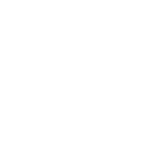

GMOD // IMPERIAL PROTOCOL // REINZ

Загрузка на сервер
INTERVAL IMPERIAL
CITY 77
Совет
Дождись полной загрузки ресурсов — так карта, модели и звуки появятся без ошибок.
Сервер
Interval Imperial
Карта
rp_localinterval
Режим
Garry's Mod